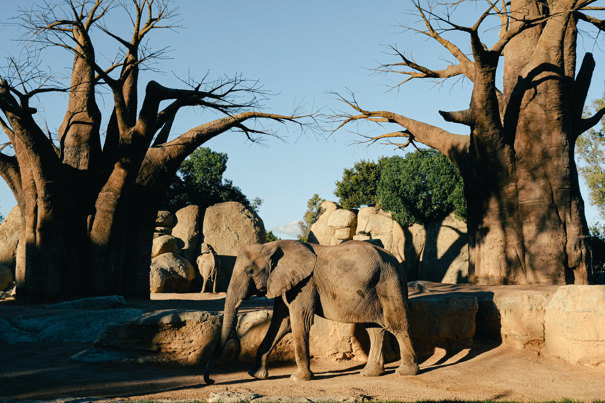
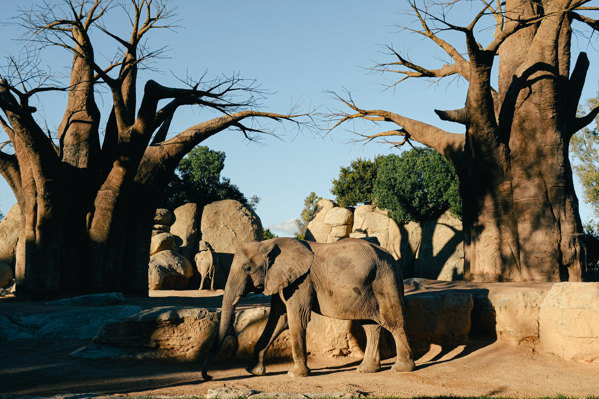

Picture of NYC
Picture of NYC
Follow Us:


Links
Visit QCC website by click here
Call us Email to prof. WuThe Zoo
 



visit The Zoo website clicking here
There are zoos where wild animals are kept for public display. Zoos are frequently the sites of sophisticated breeding facilities where endangered animals may be protected and studied. Some zoos, like this aquarium in Monterey, California, concentrate on a single species or group of animals. Many families come with there kids so there kids can learn all about the animales and their homes and how they live.The lion is a big animal native to Africa and India and belongs to the Panthera genus. It features round ears, a short, rounded head, a hairy tuft at the end of its tail, and a large, powerful chest. Due to their sexual dimorphism, adult male lions are larger than females and have a distinct mane.Elephants are the largest land animals that are still living today; some of them can weigh up to 7,500 kg, and they can grow tusks as long as 2 meters.They are also among the creatures with the longest life spans, living 50 to 70 years in the wild and up to 82 years in captivity.Asian elephants, African savannah elephants, and forest elephants are the three distinct species of elephants. The size, shape, and behavior of these elephants differ.Flamingos don't have pink skin by nature; instead, they get their color from eating shrimp and algae that contain carotenoids.Flamingos have special filters in their beaks that let them catch microscopic food particles from the water while keeping muck and sand out.Flamingos may stand on one leg in order to keep their body heat in as their legs are exposed to the cool water and air. They can even tuck their heads under their wings to sleep.Monkeys are a complex group of primates with more than 260 species, ranging in size from 4-ounce pygmy marmosets to 77-pound mandrills.The two primary subspecies of monkeys are Old World monkeys, which have flat noses and sitting pads, and New World monkeys, which have prehensile tails and flat noses.The highly intelligent and social monkey is an example of an animal that forms complex hierarchies, uses tools, and communicates through vocalizations, gestures, and facial expressions.